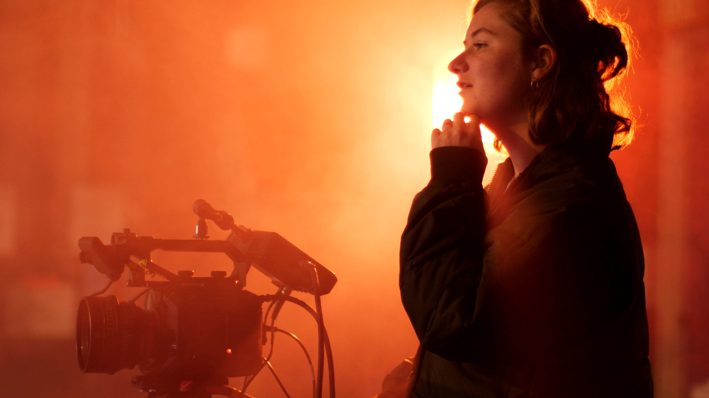

Filmmaker Orientation & Registration Program (FORP)
FORP aims to introduce the freshers to our filmmaking club.
The Orientation Program is addressed by the Director and Faculty Advisor.
The working body of the club presents several completed and ongoing film projects.
You are welcome to witness the exciting journey of our filmmaking team.
Following are the details of upcoming workshops:
Screenwriting
Cinematography
Post-production and Editing

FORP
Every Year FORP is organized to introduce freshers to the club with a focus on filmmaking skills

FORP Class
You need not be a pro in filmmaking! Our Faculty and senior members of the club are always there to guide you

FORP Event
FORP Event is supported by experienced faculty members from the Film and Media Department
Film Fest CINEMANIA
CINEMANIA is arguably the biggest and most exciting of the filmmaking events conducted during the fest.
It is organized by the RangManch VIT Filmmaking Club, CINEMANIA is a paradise for film and media enthusiasts full of creativity.
It features competitions like:
Short Film Making,
Cinematic Photography,
Screenplay Writing,
Film Expo, etc

CINEMANIA
CINEMANIA is the most awaited Film Fest of VIT Pune

Short Film Making
Create your own short film and compete for the top spot
Cinematic Photography
Showcase your photography skills through the lens of cinema
Special Event FILMTREK
FILMTREK is one of the most awaited events of the club, organized during the months of March and April every year. Various technical activities and projects are conducted under the guidance of experienced mentors. The event aims to enhance creative skills, filmmaking techniques, and teamwork. Competitions include: Best Cinematic Shot, Film Script Challenge, Director’s Cut, and more. Winners are awarded, and top projects are selected for funding through the club.

Best Cinematic Shot
A competition to capture the most visually stunning scene in a film

Working Team
Team of 4 to 5 members working together on their film projects

Planning Starts Here
The planning for each contest begins months in advance with the enthusiastic participants